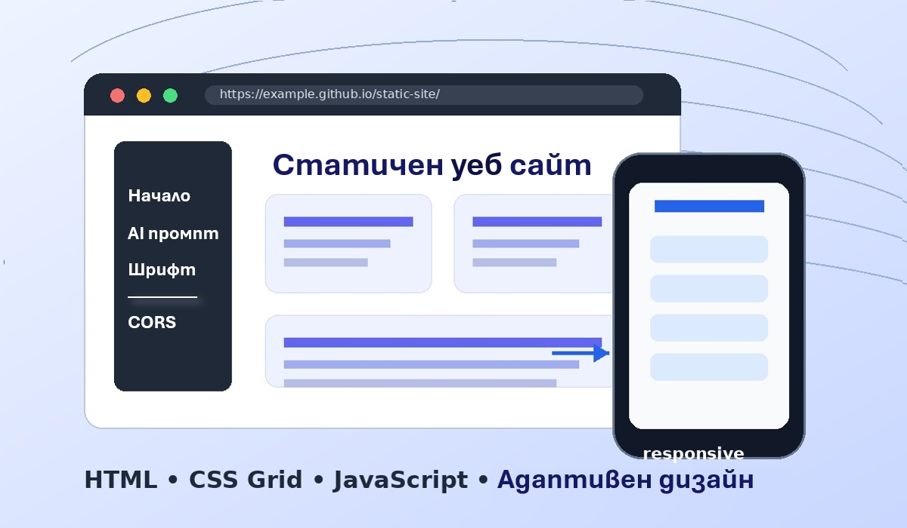

Проект по „Дизайн и публикуване в интернет“
Тема на сайта
Това е примерен уеб сайт за ученици от 11. клас: как се прави статичен уеб сайт с HTML, CSS и евентуално JavaScript, адаптивен дизайн и българска кирилица. Има две допълнителни теми за авторските права и лицензи на шрифтовете, както и CORS за допълнителни знания.

Изисквания към проекта
- Използване на CSS Grid.
- Адаптивен дизайн за мобилен телефон и настолен компютър.
- Стилове за печат чрез
@media print. - Няколко HTML страници.
- Използване на JavaScript e разрешено.
- Шрифт с българска форма на кирилицата с подходящ лиценз.
- Сайтът да бъде на български език.
Как е направен сайтът
Използвани са CSS Grid, като сайтът е адаптивен и се променя при малък екран. Изборът на шрифт е направен с помощта на Google AI и може да се види на страницата Шрифтове и Кирилица.
За по-любознателните може да се добави и тема за CORS:
защо браузърът ограничава заявки между различни домейни
и защо някои външни скриптове работят, когато са включени
чрез <script src="...">.
Страницата за CORS
e генерирана от Claude, Sonnet 4.6.